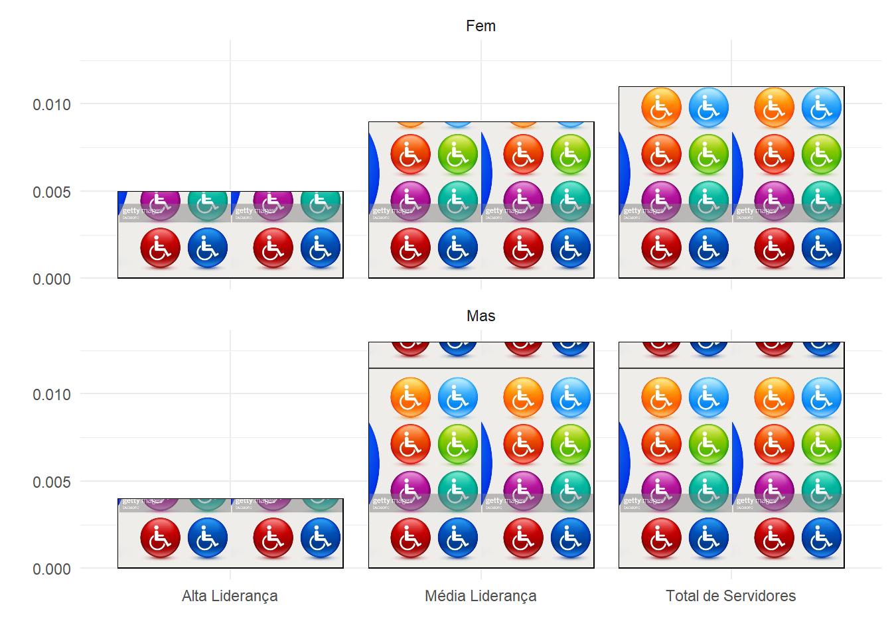

# A tibble: 36,306 x 17
FUNÇÃO `SUBNÍVEL FUNÇÃO` SEXO `COR ORIGEM ETNICA` IDADE `ESTADO CIVIL`
<chr> <chr> <chr> <chr> <dbl> <chr>
1 CA CA-0001 Fem BRANCA 36 DIVORCIADO
2 CA CA-0001 Fem BRANCA 36 SOLTEIRO
3 CA CA-0001 Fem BRANCA 38 SOLTEIRO
4 CA CA-0001 Fem BRANCA 39 CASADO
5 CA CA-0001 Fem BRANCA 40 CASADO
6 CA CA-0001 Fem BRANCA 42 DIVORCIADO
7 CA CA-0001 Fem BRANCA 46 CASADO
8 CA CA-0001 Fem BRANCA 47 CASADO
9 CA CA-0001 Fem BRANCA 47 CASADO
10 CA CA-0001 Fem BRANCA 49 SOLTEIRO
# i 36,296 more rows
# i 11 more variables: `DEFICIÊNCIA FÍSICA` <chr>, `GRUPO ESCOLARIDADE` <chr>,
# ESCOLARIDADE <chr>, `VÍNCULO SERVIDOR` <chr>, `NOME SERVIDOR` <chr>,
# `NOME SOCIAL SERVIDOR` <dbl>, `DEPENDENTE MENOR DE IDADE?` <chr>,
# funcao_sg <chr>, `NIVEL FUNCAO TABELAO` <chr>, EQUIVALENCIA <chr>,
# CATEGORIA <chr>RLP_Lideranca
Quarto
Quarto enables you to weave together content and executable code into a finished document. To learn more about Quarto see https://quarto.org.
| Mulheres | ||||||||
| Cor/Etnia por Cargos | ||||||||
| DAS-1 | DAS-2 | DAS-3 | DAS-4 | DAS-5 | DAS-6 | NE | Total | |
|---|---|---|---|---|---|---|---|---|
| AMARELA | 77 | 55 | 103 | 51 | 19 | 3 | 1 | 309 |
| BRANCA | 1.960 | 1.604 | 3.085 | 1.874 | 617 | 76 | 16 | 9.232 |
| INDIGENA | 16 | 7 | 23 | 22 | 14 | 4 | 1 | 87 |
| NAO INFORMADO | 0 | 0 | 1 | 3 | 1 | 1 | 0 | 6 |
| NEGRA | 1.159 | 965 | 1.645 | 868 | 298 | 39 | 9 | 4.983 |
| Total | 3.212 | 2.631 | 4.857 | 2.818 | 949 | 123 | 27 | 14.617 |
| Homens | ||||||||
| Cor/Etnia por Cargos | ||||||||
| DAS-1 | DAS-2 | DAS-3 | DAS-4 | DAS-5 | DAS-6 | NE | Total | |
|---|---|---|---|---|---|---|---|---|
| AMARELA | 95 | 59 | 93 | 64 | 15 | 2 | 0 | 328 |
| BRANCA | 2.925 | 2.072 | 3.806 | 2.914 | 1.147 | 229 | 61 | 13.154 |
| INDIGENA | 93 | 12 | 47 | 23 | 6 | 2 | 2 | 185 |
| NAO INFORMADO | 2 | 2 | 7 | 6 | 4 | 0 | 2 | 23 |
| NEGRA | 2.160 | 1.295 | 2.499 | 1.416 | 558 | 60 | 11 | 7.999 |
| Total | 5.275 | 3.440 | 6.452 | 4.423 | 1.730 | 293 | 76 | 21.689 |
